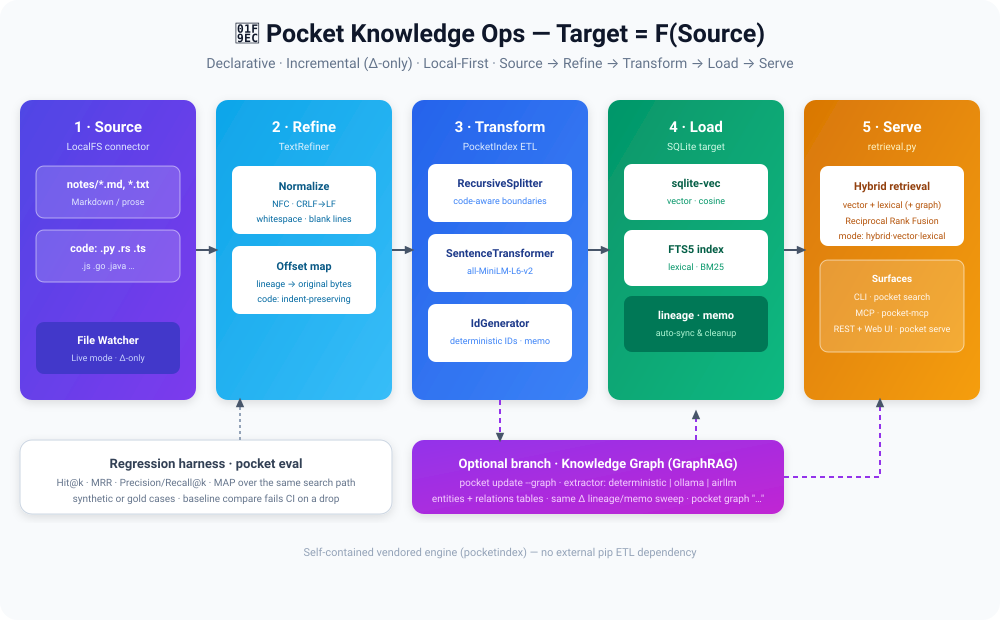
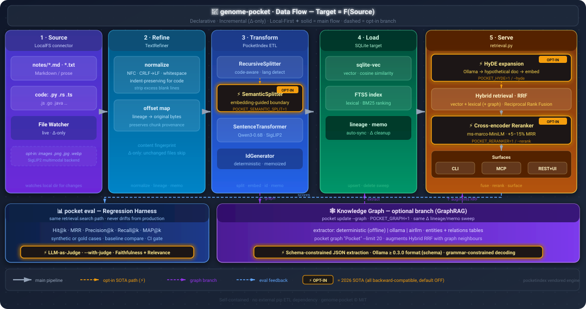
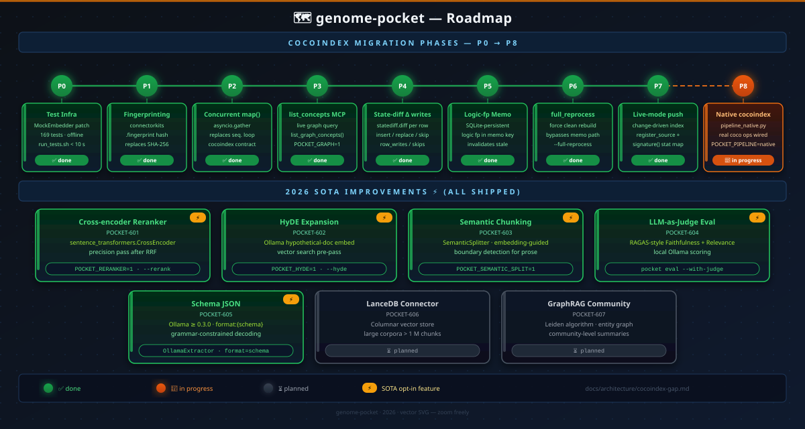

Click any diagram to zoom in. Press Esc or click outside to close.
Target = F(Source)
Figure 1. The full pipeline — five incremental stages, three serve surfaces
(CLI / MCP / REST + Web UI), the optional knowledge-graph branch, and the
pocket eval regression harness.

Figure 2. Data flow through the PocketIndex declarative ETL engine, including 2026 SOTA optional stages (⚡).

Figure 3. Phased migration to the native cocoindex runtime (P0–P6) and 2026 SOTA feature tracking (POCKET-601–607).